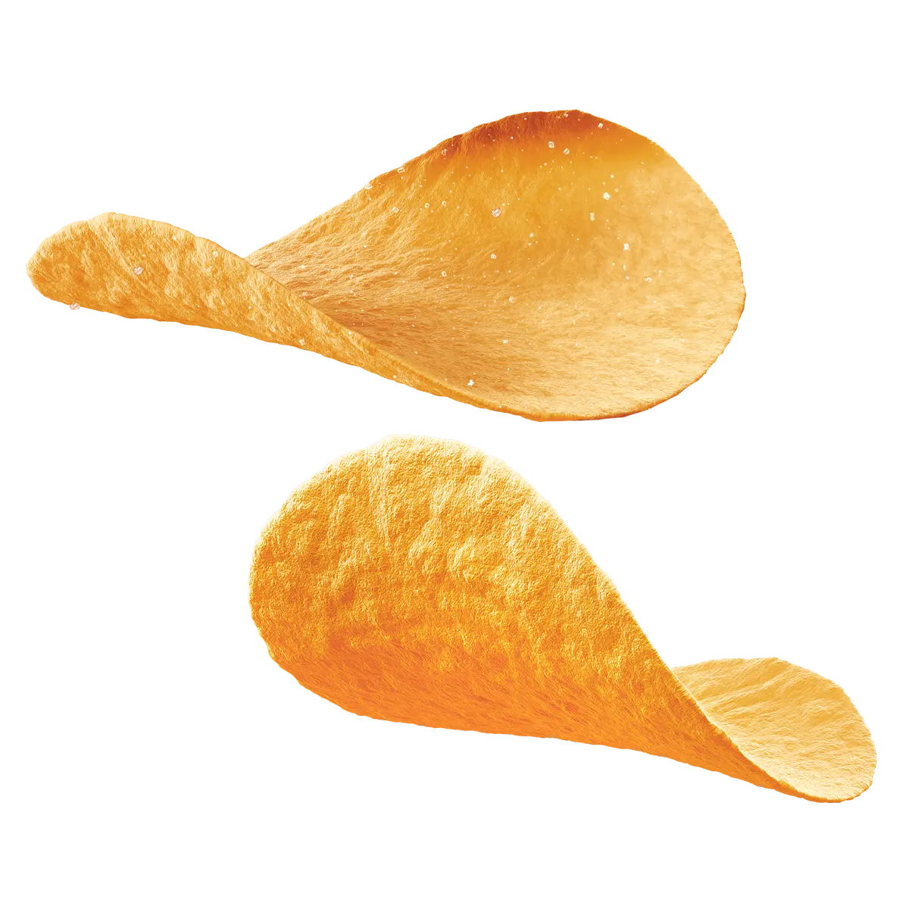
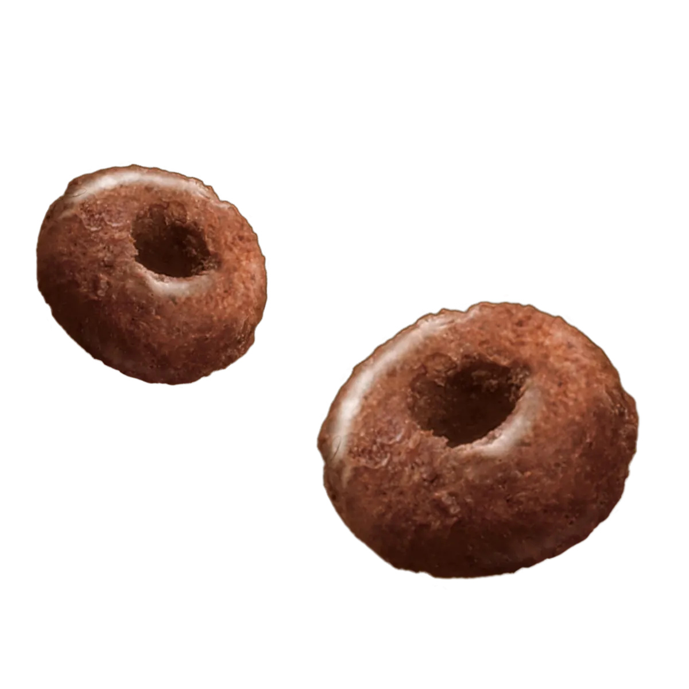
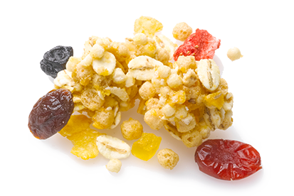
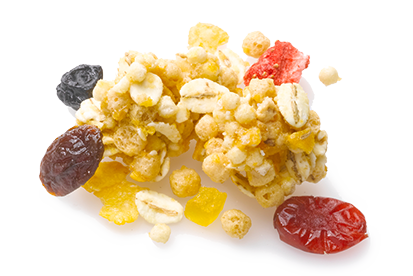
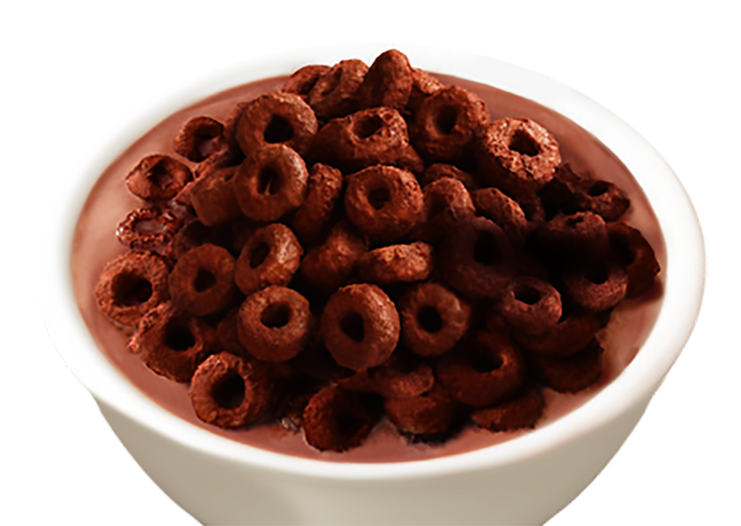
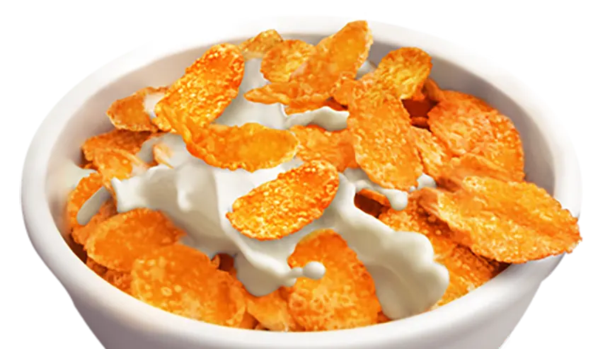
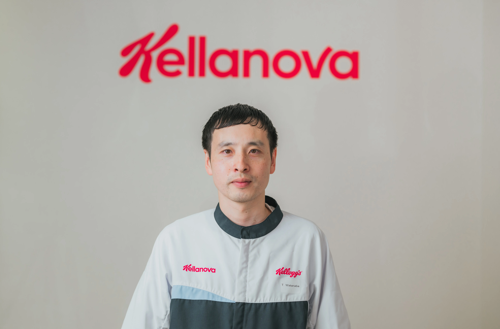

スナック本部
本社
本社
これまでのご自身のキャリアについて教えてください。
元々理系出身で、前職では消費者調査やマーケティングを担当。入社後は日本や韓国のマーケティング、シンガポール駐在者としてアジア・中東・アフリカのマーケティング、⼈材育成に携わり現在は日本でスナックカテゴリーのコマーシャルチームを率いています

元々理系出身で、前職では消費者調査やマーケティングを担当。入社後は日本や韓国のマーケティング、シンガポール駐在者としてアジア・中東・アフリカのマーケティング、⼈材育成に携わり現在は日本でスナックカテゴリーのコマーシャルチームを率いています
マーケティング本部
本社
本社
日本ケロッグのマーケティングで働く魅力を教えてください。
世界的ブランドの成長に貢献できることが魅力です。ビジネスの成長が⼈々の健康的な生活につながるため社会的な意義を感じることが出来ます。責任範囲も広くチャレンジが求められますが、やりがいの大きな仕事に取り組むことが出来ます。
世界的ブランドの成長に貢献できることが魅力です。ビジネスの成長が⼈々の健康的な生活につながるため社会的な意義を感じることが出来ます。責任範囲も広くチャレンジが求められますが、やりがいの大きな仕事に取り組むことが出来ます。
営業本部
本社
本社
営業の働き方について教えてください。
直行直帰、リモートワーク、フルフレックスなどを活用し、効率的に業務を進められます。社員⼀⼈⼀⼈に多くの権限が与えられており、オーナーシップを持って働くことができます。仕事とプライベートのバランスもとりやすい環境です。

直行直帰、リモートワーク、フルフレックスなどを活用し、効率的に業務を進められます。社員⼀⼈⼀⼈に多くの権限が与えられており、オーナーシップを持って働くことができます。仕事とプライベートのバランスもとりやすい環境です。
研究開発部
本社
本社
研究開発部門ではどのような⼈材を必要としていますか？
ロジックとパッションをもって、研究開発部だけではなく様々な部署の方とも協業しながら共にチームを引っ張っていける方を必要としています。
ロジックとパッションをもって、研究開発部だけではなく様々な部署の方とも協業しながら共にチームを引っ張っていける方を必要としています。
 

 人事総務部
人事総務部本社
日本ケロッグの文化や大切にしている価値観について教えてください。
「最高を追求する文化」の実現を目指し、あらゆることに最善を尽くすことを奨励しています。「誠実」「責任感」「勇気」の価値観を大切にし、お互いの成功を称え合うような仕組みもあります。明るい社風で、価値観は国を超えて浸透しています。
「最高を追求する文化」の実現を目指し、あらゆることに最善を尽くすことを奨励しています。「誠実」「責任感」「勇気」の価値観を大切にし、お互いの成功を称え合うような仕組みもあります。明るい社風で、価値観は国を超えて浸透しています。


製造部
高崎工場
高崎工場
仕事をする上でご自身が大切にしていることを教えてください。
安全に作業をすることです。子供から大⼈まで幅広く食べてくださっている製品を作っているからこそ、安全性や品質を意識して生産活動をすることを大切にしています。

安全に作業をすることです。子供から大⼈まで幅広く食べてくださっている製品を作っているからこそ、安全性や品質を意識して生産活動をすることを大切にしています。
プランニング＆ロジスティクス部
高崎工場
高崎工場
日本ケロッグの生産管理で働く魅力を教えてください。
社内の多様な⼈と協力しながら仕事を進められる点です。また、製造から納品まで、全工程に携わることができるため、成果を実感しやすいこともやりがいにつながります。不測の事態では、臨機応変な対応が求められますが、成功時には大きな達成感を得られます。
社内の多様な⼈と協力しながら仕事を進められる点です。また、製造から納品まで、全工程に携わることができるため、成果を実感しやすいこともやりがいにつながります。不測の事態では、臨機応変な対応が求められますが、成功時には大きな達成感を得られます。
品質保証部
高崎工場
高崎工場
日本ケロッグのワークスタイル（働き方）について教えてください。
私は、産休・育休も取得して復職しています。子育て中ですが、フレックス、在宅勤務もあり、柔軟な働き方が出来ています。会社の理解・サポートは手厚いと思います。
私は、産休・育休も取得して復職しています。子育て中ですが、フレックス、在宅勤務もあり、柔軟な働き方が出来ています。会社の理解・サポートは手厚いと思います。